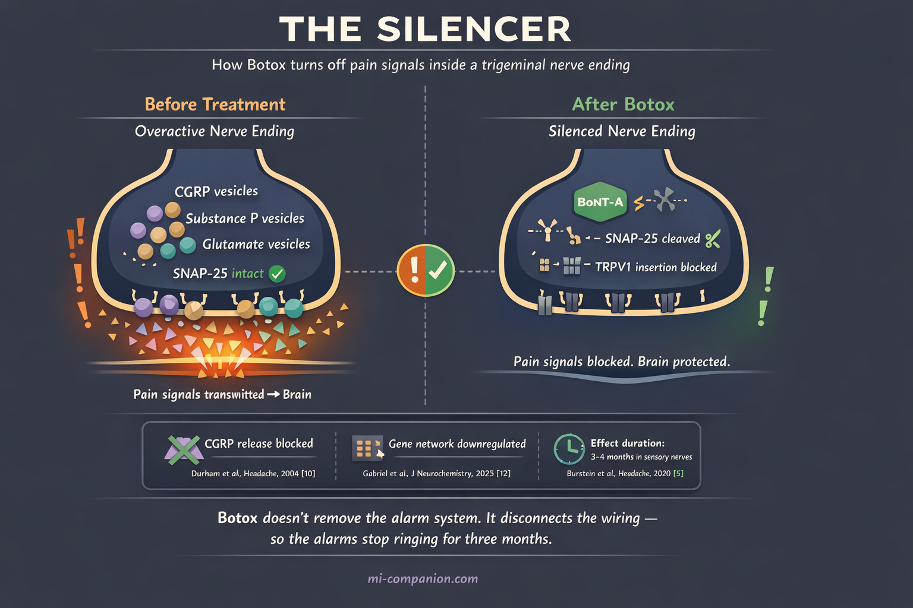
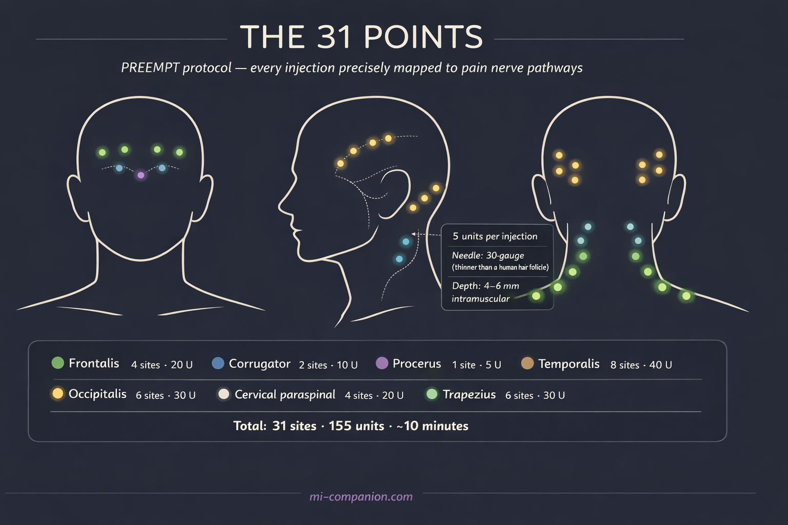
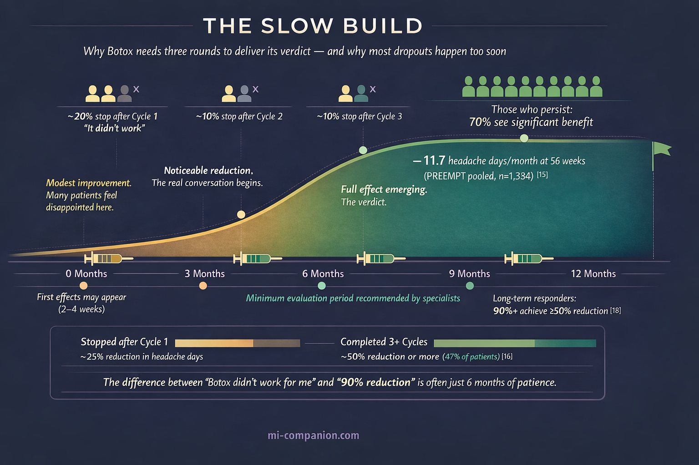

By Rustam Iuldashov
30 years lived experience with chronic migraine | Sources: 27 peer-reviewed references including Cephalalgia, BMJ Open, Headache, Nature Reviews Neurology, Journal of Neurochemistry, Physiological Reviews | Last updated: June 2026
Medical Review: This content is based on peer-reviewed research from Cephalalgia, BMJ Open, Headache, Nature Reviews Neurology, Journal of Neurochemistry, Physiological Reviews, Annals of Neurology, Science, and Toxins.
Important Notice: This article is for informational purposes only and does not replace professional medical advice. The author is not a licensed physician or healthcare professional. Always consult your doctor before making changes to your treatment plan.
Key Takeaways
- Botox for chronic migraine works by blocking pain-signaling molecules (CGRP, substance P, glutamate) from overactive trigeminal nerve endings — not by relaxing muscles[5, 10]
- The PREEMPT trials (n=1,384) showed significant reductions in headache days; real-world data over 10+ years confirms sustained effectiveness, with over 90% of long-term users achieving 50%+ reduction[14, 15, 18]
- Treatment involves 31 injections across 7 head/neck muscle areas every 12 weeks; full benefit typically requires 2–3 treatment cycles (6–9 months)[19, 20]
- Botox is FDA-approved only for chronic migraine (≥15 headache days/month) — it has not shown efficacy for episodic migraine[2, 17]
- Common side effects are mild and temporary: neck pain (9%), eyelid drooping (4%), muscular weakness (4%); fewer than 4% of patients discontinue due to side effects[22, 23]
- Botox and CGRP therapies target different nerve fiber types (C-fibers vs. Aδ-fibers) and can be combined for patients needing additional benefit[25, 27]
In 1992, a Beverly Hills cosmetic surgeon noticed something he couldn’t explain. Patients coming in for wrinkle treatment kept telling him the same thing: their migraines were vanishing.[1] Dr. William Binder documented this pattern, tested it rigorously, and published his findings. But the medical community was skeptical. A wrinkle treatment for migraine? It took nearly two decades of clinical trials before the FDA approved onabotulinumtoxinA — Botox — as a preventive treatment for chronic migraine in 2010.[2]
Since then, over one million people have received it.[3] Yet confusion persists. Is it the same Botox that smooths foreheads? Same molecule, different mission. Does it work? For a specific group of patients — convincingly. And why would a cosmetic injection help with a neurological disease?
The answer has nothing to do with wrinkles. It has everything to do with pain.
Not Muscles. Nerves.
The first thing to understand: Botox for migraine does not work by relaxing muscles.
That was the early assumption. Migraine patients carry tension in the head and neck, so perhaps loosening those muscles was the answer. The evidence dismantled this theory quickly. Pain relief arrived before muscles relaxed.[4] It worked in areas with no measurable change in muscle tension.[5] And the injection map looked nothing like the cosmetic protocol.
The real mechanism is more elegant — and more surprising. OnabotulinumtoxinA enters unmyelinated C-fiber nerve endings in the trigeminal system, the brain’s primary pain highway.[6] Once inside, it cleaves a protein called SNAP-25 — a molecular linchpin required for nerve endings to release their chemical cargo.[7]
Picture your trigeminal nerve endings as smoke detectors. In chronic migraine, these detectors malfunction. They fire constantly, flooding the system with pain-signaling molecules: CGRP (calcitonin gene-related peptide), substance P, and glutamate.[8] Botox doesn’t rip out the detectors. It disconnects the batteries. The alarms stop screaming.
Fewer pain signals reach the brain. Peripheral sensitization eases. And gradually, central sensitization — the process through which the brain itself becomes hypervigilant to pain — begins to unwind.[9]
In 2004, Durham and colleagues provided the first direct evidence that Botox blocks CGRP release from trigeminal neurons.[10] This mattered enormously, because CGRP would later emerge as the central molecule driving migraine — the very target of today’s newest migraine medications.[11]
Two decades later, the science keeps deepening. A 2025 study by Gabriel et al. showed that in human sensory neurons, Botox doesn’t just block one protein. It downregulates an entire network of genes responsible for neurotransmitter release.[12] The toxin doesn’t silence a single alarm. It dims the entire control panel.

The Evidence: What 1,384 Patients Taught Us
The landmark evidence comes from the PREEMPT program — two Phase III randomized controlled trials enrolling 1,384 adults with chronic migraine.[13, 14]
The numbers tell a clear story. In PREEMPT 2, patients receiving Botox lost 9.0 headache days per 28-day cycle, compared with 6.7 for placebo (p < .001).[14] Over the full 56-week program — including an open-label extension — headache frequency dropped by nearly 12 days per month from baseline.[15]
But clinical trials are controlled gardens. Real life is wilderness. How does Botox perform in the messier, more complex world of actual patients?
A 2022 meta-analysis spanning ten years of real-world observational data — 44 studies — found that Botox reduced headache days by approximately 10.6 per month at 24 weeks. Nearly 47% of patients achieved a 50% or greater reduction in migraine days.[16]
A 2019 Cochrane systematic review of 28 RCTs confirmed a reduction of roughly 2 migraine days per month compared with placebo, alongside a favorable safety profile.[17]
The most compelling long-term data arrived in 2025. An Italian longitudinal study followed 579 patients for up to 11 years. Over 90% of long-term users achieved a 50% or greater reduction in headache days. Only 5.3% were classified as non-responders.[18]
The pattern across trials, meta-analyses, and real-world studies is consistent: Botox works. Not for everyone. Not overnight. But for those who respond, the benefit is substantial — and it lasts.
31 Needles, 7 Muscle Groups, 10 Minutes
The treatment protocol — called the PREEMPT protocol — is precisely mapped. A trained specialist injects 155 units of onabotulinumtoxinA across 31 sites in 7 muscle groups of the head and neck:[19, 20]
Frontalis (forehead) — 4 sites. Corrugator (between the eyebrows) — 2 sites. Procerus (bridge of nose) — 1 site. Temporalis (temples) — 4 sites per side. Occipitalis (back of head) — 3 sites per side. Cervical paraspinal (neck) — 2 sites per side. Trapezius (shoulders) — 3 sites per side.
Each injection delivers 5 units through a fine needle. Most patients describe it as a small pinch. The whole procedure takes 10 to 15 minutes.[20] Doctors may add up to 40 extra units at 8 additional sites based on individual pain patterns — maximum 195 units across 39 sites.[19]

Treatment repeats every 12 weeks. And here lies the detail that separates those who benefit from those who give up too soon: Botox for migraine is a slow build.
Most patients don’t experience the full effect until the second or third treatment cycle — six to nine months after the first injection.[3] Benefit increases with successive cycles.[15] The first round is the introduction. The second is the real conversation. The third is the verdict.
This slow onset is the most common reason patients abandon treatment early. If you’re considering Botox, know this upfront: patience is not optional. It is part of the prescription.

Who It Helps — and Who It Doesn’t
Botox is FDA-approved for one diagnosis: chronic migraine — 15 or more headache days per month, with at least 8 meeting migraine criteria, persisting for more than 3 months.[2]
This boundary is not arbitrary. Botox has not demonstrated efficacy for episodic migraine — fewer than 15 headache days per month.[17] The Cochrane review found no evidence to support or refute its use in that population.[17] The PREEMPT trials enrolled only chronic migraine patients, and the results belong to them.
Why the difference? The leading theory involves central sensitization. In chronic migraine, the brain’s pain circuits have been rewired into a state of constant alertness. Botox interrupts this cycle from the periphery — quieting overactive sensory neurons so the central nervous system can gradually reset.[6, 9] In episodic migraine, where central sensitization is less entrenched, this peripheral strategy may simply not have enough to work with.
One encouraging finding: the PREEMPT trials included patients with medication overuse headache — the spiral of taking more and more acute medications that paradoxically worsens headache frequency — and Botox proved effective in this subgroup as well.[17, 21] That matters, because medication overuse complicates virtually every other preventive approach.
One practical note: because Botox is an expensive treatment, most insurance plans — and healthcare systems worldwide — require documented failure of two or more lower-cost preventive medications (such as topiramate or beta-blockers) before approving coverage.[3] In the U.S., Allergan offers a Botox Savings Card that can reduce out-of-pocket costs. Ask your neurologist’s office about step therapy requirements and savings programs before your first appointment.
⚠️ When to Seek Emergency Help
Botox is a preventive treatment — not rescue therapy. If you experience a sudden, severe headache unlike anything before, especially with neck stiffness, vision changes, confusion, or weakness — call your local emergency number immediately.
This could indicate a different and potentially life-threatening condition. Do not use this article to self-diagnose.
Side Effects: The Honest Numbers
In the PREEMPT trials, side effects were generally mild. The most common compared with placebo: neck pain (9% vs. 3%), muscular weakness (4% vs. <1%), eyelid drooping (4% vs. <1%), and injection-site pain (3% vs. 2%).[22] Fewer than 4% of patients stopped treatment due to adverse events.[23]
Eyelid drooping — the one that worries people most — is temporary. It typically resolves within weeks and occurs when the toxin migrates near the eyelid muscles. A skilled injector following the PREEMPT protocol, placing each needle at the correct depth and distance, minimizes this risk considerably.[20]
Another common concern — especially among men — is the “frozen face” effect familiar from cosmetic Botox. The migraine protocol distributes tiny doses (5 units per site) across 31 points, whereas cosmetic treatment concentrates 20–30 units in the forehead alone. The result: most migraine patients retain full facial expressiveness. Any subtle forehead smoothing is a side benefit, not the goal.
The safety question patients always ask: “Is it safe to put a toxin in my body?” At the migraine dose — 155 units — the amount is minute. A review of 72 cases of generalized weakness following botulinum toxin treatment found that none involved migraine patients.[23] Systemic spread is associated with doses above 600 units — four times the migraine protocol.
Botox and CGRP Therapies: Different Tools, One Workshop
Since 2018, a new generation of migraine-specific treatments has arrived: CGRP-targeting therapies — monoclonal antibodies (erenumab, fremanezumab, galcanezumab, eptinezumab) and small-molecule gepants (atogepant, rimegepant). In 2024, the American Headache Society elevated CGRP therapies to first-line status for migraine prevention.[24]
Where does that leave Botox?
Exactly where it has always been — as a foundational treatment with a different mechanism. CGRP monoclonal antibodies prevent activation of thinly myelinated Aδ-fiber nociceptors. Botox silences unmyelinated C-fiber nociceptors.[25] They target different branches of the same pain tree.
One headache specialist compared Botox to amitriptyline — a broad-spectrum approach that dampens multiple neuropeptide pathways at once — while CGRP antibodies act as a precision tool aimed at one specific molecule.[26] The AHS consensus statement, updated in 2024, supports combining Botox with CGRP monoclonal antibodies as “probably effective” for patients who need more than one weapon.[27]
In practice, this layered strategy is increasingly common: Botox as the base, CGRP therapy added when needed. For chronic migraine specifically, Botox remains one of only two FDA-approved preventive treatments — and the only one that requires no daily medication, no monthly self-injection, and no systemic side effects for most patients.
What 30 Years Taught Me
I’ve lived with migraine for three decades. I’ve been through the full catalogue of preventive attempts — the weight gain, the cognitive fog, the medications that felt like trading one problem for another.
When I first heard about Botox for migraine, I reacted the way most people do: the wrinkle treatment? Really?
What I didn’t understand then was that Botox for migraine was never about cosmetics. It was about an accidental discovery that led to rigorous science, which led to a treatment that silences overactive pain nerves from the outside in. The cosmetic effect was the footnote. The headline — written in the PREEMPT data, the Cochrane reviews, and the experiences of over a million patients — is about something far more important.
Not hope as a platitude. Hope as a molecule. Hope as 31 precisely placed needles that tell your nervous system: you can quiet down now.
⚕️ Important Medical Disclaimer
This article is for informational and educational purposes only and does not constitute medical advice, diagnosis, or treatment. The author, Rustam Iuldashov, is not a licensed physician, neurologist, or healthcare professional. He is a patient advocate with 30 years of personal experience living with chronic migraine.
All clinical claims in this article are sourced from peer-reviewed research published in indexed medical journals. Study designs and sample sizes are noted where applicable.
Always consult a qualified healthcare provider for questions about your individual health, migraine treatment, or medication decisions.
Botox (onabotulinumtoxinA) is a prescription treatment that must be administered by a trained medical specialist. Never attempt to self-administer botulinum toxin or modify prescribed treatment protocols. This content was last reviewed for accuracy on June 2026.
References
- Binder WJ, Brin MF, Blitzer A, Schoenrock LD, Pogoda JM. “Botulinum toxin type A (BOTOX) for treatment of migraine headaches: an open-label study.” Otolaryngology–Head and Neck Surgery, 123(6):669–676 (2000). doi:10.1067/mhn.2000.110960. Study design: Open-label prospective study. n=77.
- U.S. Food and Drug Administration. Approval of onabotulinumtoxinA (BOTOX) for prophylaxis of headaches in adults with chronic migraine. October 2010. Regulatory action.
- American Migraine Foundation. “Botox for Migraine.” americanmigrainefoundation.org (2023). Patient education resource.
- Brin MF, Aoki KR. “Botulinum toxin type A: pharmacology.” In: Handbook of Botulinum Toxin Treatment, 2nd ed. Blackwell Science (2004). Review.
- Burstein R, Zhang Z, Levy D, Aoki KR, Bhatt DK. “Mechanism of action of onabotulinumtoxinA in chronic migraine: a narrative review.” Headache, 60(7):1259–1272 (2020). doi:10.1111/head.13849. Study design: Narrative review.
- Burstein R, Zhang Z, Levy D, Aoki KR, Bhatt DK. “Mechanism of action of onabotulinumtoxinA in chronic migraine: a narrative review.” Headache, 60(7):1259–1272 (2020). doi:10.1111/head.13849. Study design: Narrative review.
- Dong M, Yeh F, Bhatt DK, et al. “SV2 is the protein receptor for botulinum neurotoxin A.” Science, 312(5773):592–596 (2006). doi:10.1126/science.1123654. Study design: Preclinical mechanistic study.
- Goadsby PJ, Holland PR, Martins-Oliveira M, et al. “Pathophysiology of migraine: a disorder of sensory processing.” Physiological Reviews, 97(2):553–622 (2017). doi:10.1152/physrev.00034.2015. Study design: Comprehensive review.
- Burstein R, Jakubowski M. “Analgesic triptan action in an animal model of intracranial pain: a race against the development of central sensitization.” Annals of Neurology, 55(1):27–36 (2004). doi:10.1002/ana.10785. Study design: Preclinical study.
- Durham PL, Cady R, Cady R. “Regulation of calcitonin gene-related peptide secretion from trigeminal nerve cells by botulinum toxin type A: implications for migraine therapy.” Headache, 44(1):35–42 (2004). doi:10.1111/j.1526-4610.2004.04007.x. Study design: In vitro experimental study.
- Edvinsson L, Haanes KA, Warfvinge K, Krause DN. “CGRP as the target of new migraine therapies — successful translation from bench to clinic.” Nature Reviews Neurology, 14(6):338–350 (2018). doi:10.1038/s41582-018-0003-1. Study design: Review.
- Gabriel KA, et al. “Botulinum neurotoxin A1 signaling in pain modulation within human sensory neurons.” Journal of Neurochemistry (2025). doi:10.1111/jnc.70236. Study design: In vitro experimental study with human DRG neurons.
- Aurora SK, Dodick DW, Turkel CC, et al. “OnabotulinumtoxinA for treatment of chronic migraine: results from the PREEMPT 1 trial.” Cephalalgia, 30(7):793–803 (2010). doi:10.1177/0333102410364676. Study design: RCT (Phase III). n=679.
- Diener HC, Dodick DW, Aurora SK, et al. “OnabotulinumtoxinA for treatment of chronic migraine: results from the PREEMPT 2 trial.” Cephalalgia, 30(7):804–814 (2010). doi:10.1177/0333102410364677. Study design: RCT (Phase III). n=705.
- Aurora SK, Dodick DW, Diener HC, et al. “OnabotulinumtoxinA for treatment of chronic migraine: pooled analyses of the 56-week PREEMPT clinical program.” Headache, 51(9):1358–1373 (2011). doi:10.1111/j.1526-4610.2011.01990.x. Study design: Pooled analysis of 2 RCTs. n=1,384.
- Lanteri-Minet M, Ducros A, Francois C, et al. “Effectiveness of onabotulinumtoxinA (BOTOX) for the preventive treatment of chronic migraine: a meta-analysis on 10 years of real-world data.” Cephalalgia, 42(14):1543–1564 (2022). doi:10.1177/03331024221123058. Study design: Systematic review and meta-analysis (44 observational studies).
- Herd CP, Tomlinson CL, Rick C, et al. “Cochrane systematic review and meta-analysis of botulinum toxin for the prevention of migraine.” BMJ Open, 9(7):e027953 (2019). doi:10.1136/bmjopen-2018-027953. Study design: Cochrane systematic review and meta-analysis. n=4,190 (28 RCTs).
- Baraldi C, et al. “Real-world insights into the effectiveness and tolerability of onabotulinumtoxinA in chronic migraine: a long-term evaluation of up to 11 years.” Toxins, 17(4):208 (2025). doi:10.3390/toxins17040208. Study design: Retrospective longitudinal study. n=579.
- Dodick DW, Turkel CC, DeGryse RE, et al. “OnabotulinumtoxinA for treatment of chronic migraine: pooled results from the PREEMPT clinical program.” Headache, 50(6):921–936 (2010). doi:10.1111/j.1526-4610.2010.01678.x. Study design: Pooled RCT analysis. n=1,384.
- Blumenfeld A, Silberstein SD, Dodick DW, et al. “Method of injection of onabotulinumtoxinA for chronic migraine: a safe, well-tolerated, and effective treatment paradigm based on the PREEMPT clinical program.” Headache, 50(9):1406–1418 (2010). doi:10.1111/j.1526-4610.2010.01766.x. Study design: Clinical protocol description.
- Silberstein SD, Blumenfeld AM, Cady RK, et al. “OnabotulinumtoxinA for treatment of chronic migraine: PREEMPT 24-week pooled subgroup analysis of patients who had acute headache medication overuse at baseline.” Journal of the Neurological Sciences, 331(1–2):48–56 (2013). doi:10.1016/j.jns.2013.05.003. Study design: Subgroup analysis from pooled RCTs. n=904.
- Allergan/AbbVie. BOTOX® (onabotulinumtoxinA) Prescribing Information. U.S. FDA-approved labeling (2020).
- Locke DE, et al. Review of 72 cases of generalized weakness following botulinum toxin treatment across indications (2021). Referenced in: Miles for Migraine, “All You Need To Know About Botox for Migraine” (2025). Study design: Case series review. n=72.
- Charles AC, Digre KB, Goadsby PJ, Robbins MS, Hershey A; American Headache Society. “Calcitonin gene-related peptide-targeting therapies are a first-line option for the prevention of migraine: An American Headache Society position statement update.” Headache, 64(4):333–341 (2024). doi:10.1111/head.14692. Study design: Consensus position statement.
- Butera C, Cetta I, Messina R, et al. “Efficacy and safety of anti-CGRP monoclonal antibodies for chronic migraine prophylaxis in patients treated with botulinum toxin A: a prospective monocentric study.” The Journal of Headache and Pain (2024). doi:10.1177/25158163241267310. Study design: Prospective monocentric study. n=47.
- NeurologyLive Expert Panel Discussion (Friedman DM, et al.). “Migraine: Mechanism of action of onabotulinumtoxinA.” NeurologyLive (2026). Expert clinical commentary.
- Ailani J, Burch RC, Robbins MS; American Headache Society. “The American Headache Society consensus statement: update on integrating new migraine treatments into clinical practice.” Headache, 62(1):111–139 (2022). doi:10.1111/head.14262. Study design: Consensus statement / Clinical review.

How We Create Content
- Peer-reviewed sources only. Cephalalgia, BMJ Open, Headache, Nature Reviews Neurology, Journal of Neurochemistry, Physiological Reviews, Annals of Neurology, Science, Toxins.
- Study transparency. Study design and sample sizes noted for all clinical references.
- Source verification. All claims backed by numbered references with DOI links.
- Experience + Science. 30 years personal migraine experience combined with peer-reviewed evidence.
- Regular updates. Articles reviewed when significant new research emerges.
- No conflicts of interest. No funding from Allergan/AbbVie, CGRP antibody manufacturers, or any pharmaceutical firm.
Track Your Botox Cycles. See Your Progress.
Migraine Companion helps you log attacks, track treatment cycles, and measure whether your headache days are truly decreasing — turning 31 needles of hope into data you can share with your neurologist.
Last reviewed: June 2026
Next scheduled review: December 2026